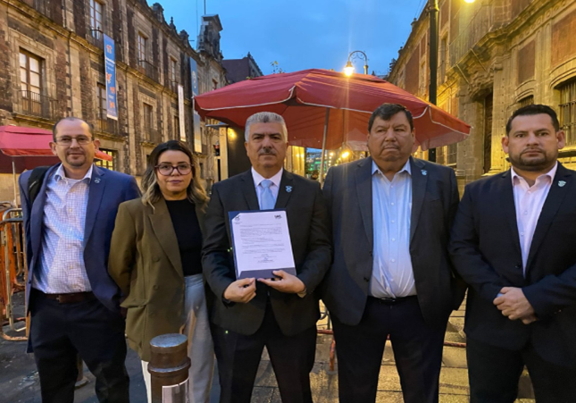
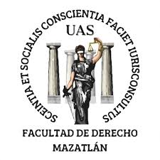

La Universidad Autónoma de Sinaloa (UAS) inició un paro de labores indefinido en protesta contra la nueva Ley Orgánica y la separación de Robes Pierre Lizárraga Otero como encargado de la rectoría. Este paro busca defender la autonomía universitaria y ha afectado a diversas facultades, incluyendo la de Ciencias Económicas y Sociales.

Facultad de
Derecho Mazatlán

Derecho Mazatlán

Universidad Autónoma de Sinaloa